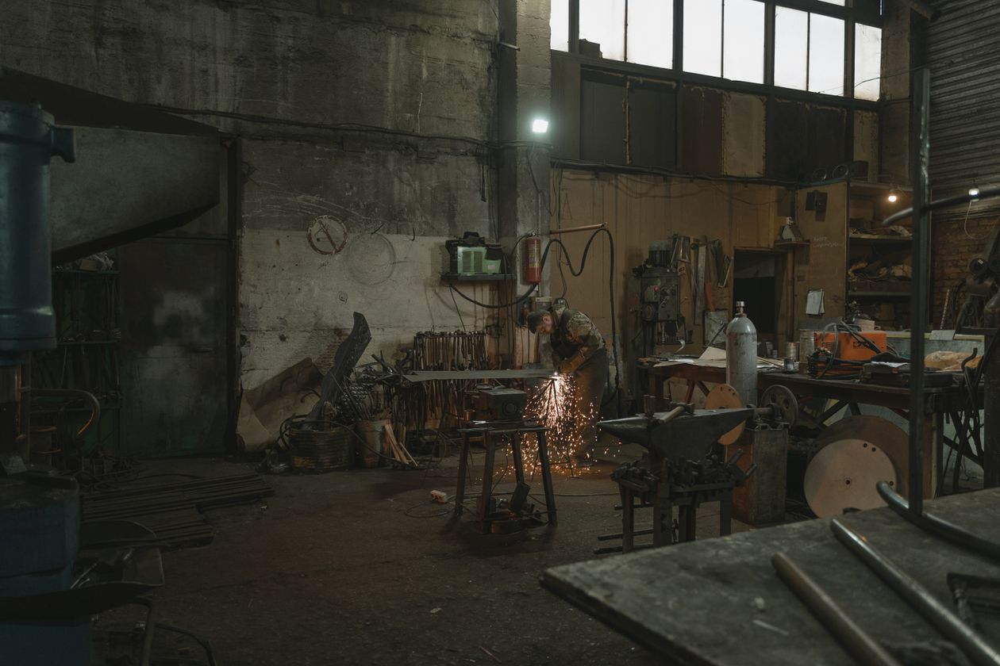
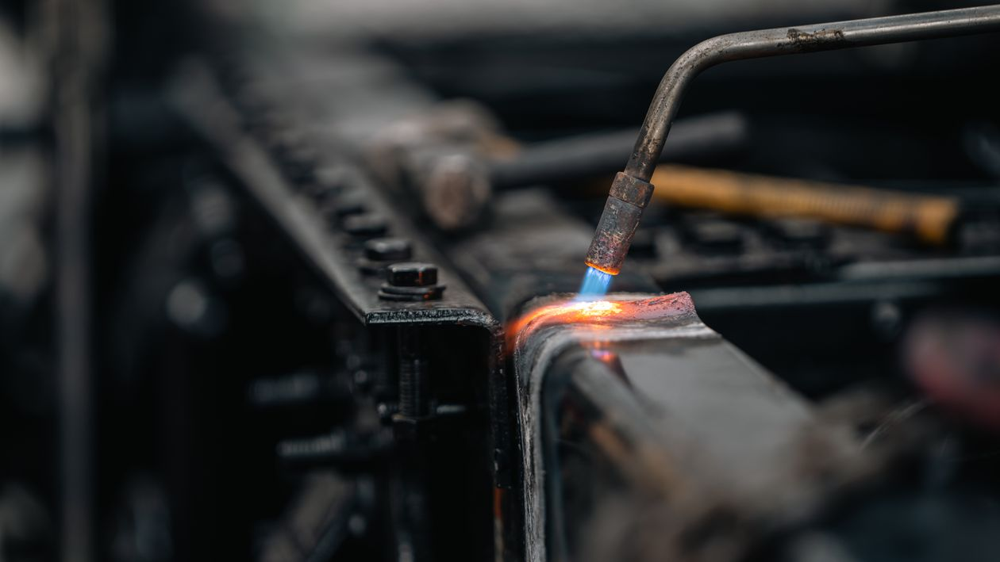

DWG EB-02 · The Maker & The Manual
Living with moving work
Half of this page is the sculptor. The other half is the page most kinetic portfolios don't have: what the work asks of the building that owns it — drives, noise, service, loads — written down before you commission, not discovered after.
The Sculptor
Elias Brandt trained as an instrument maker — four years building and regulating precision mechanisms — before a decade fabricating automation for theatre: flying scenery, revolving stages, machines that had to move beautifully and stop safely, every night, in the dark. The kinetic practice, founded in Sheffield in 2011, is what happened when the mechanisms stopped being scenery's servants and became the work itself.
The through-line is not a style; it is a discipline. A theatre machine is engineered for its worst night — a full house, a tired operator, a part at the end of its life. Brandt's sculpture is engineered the same way, which is why this site talks about bearings and decibels as readily as about form. Twenty-seven pieces are installed across offices, hospitals, gardens and one pool hall; every one of them is still on its service plan, and every one of them can be stilled, lowered and removed by the people who own it, using the pack it arrived with.
The workshop is a two-person operation in Sheffield's Kelham Island quarter — Brandt and a fabricator, with structural engineering bought in from a chartered practice for anything heavy that hangs over heads. Commissions are limited to a handful a year on purpose: the service obligations accumulate, and a maker who cannot service year ten has no business selling year one.


Owner's Reference · 01
Three ways to move, compared honestly
The first decision in any commission is the drive, and it is a decision about ownership, not aesthetics. Noise is stated as text because it should be read, not performed at you.
| Drive | What moves it | Noise at 3 m | Power | Typical failure | Service interval |
|---|---|---|---|---|---|
| Wind | The weather, through feathering vanes | None — bearing whisper only | None | Bearing wear; storm damage if the fuse is ignored | Annual inspection; bearings ~7 years |
| Building air current | The room's own ventilation and draughts | None — no motor exists | None | Almost nothing to fail; balance drifts if the building's airflow changes | Annual clean & re-balance |
| Low-voltage motor | Stepper or geared motor, belt or direct drive | 23–31 dB(A), measured per piece and engraved on its plate | 12–40 W, from a standard socket or lighting circuit | Drivetrain wear (see the Tide Table file); the brake engages and the piece settles level — it cannot drop | Annual visit; drivetrain inspection at year 5 |
Owner's Reference · 02
Service, installation, safety, editions
The service plan
One visit a year (£380, published on the rate card): clean, inspect bearings and tethers, re-balance, and a written report that goes in your building file. Years 2–10 are covered by the plan; bearings on ceiling pieces carry a 10-year warranty, drivetrain parts 5 years, finishes 2 years outdoors and indefinitely indoors against defects. If the workshop ever closes, every plan holder receives the full drawing set and parts list for their piece — the obligation is designed to survive its maker.
Installation requirements
Ceiling pieces need verified structure: fixing points rated for five times the piece's weight, established by survey before the quote is fixed. Allow a clear cylinder of the piece's span plus 600 mm, and a sway envelope stated on its drawing — nothing, including sprinkler pipework and signage, inside it. Outdoor pieces need a foundation decision (ground screws wherever the ground allows) and a lightning conversation for tall masts. All of this is surveyed by the workshop, not left to you.
Safety, stated plainly
Every ceiling-hung piece over 25 kg is signed off by a chartered structural engineer, carries secondary safety tethers on every element, and is designed so that any single failure leaves it hanging still and level — the Tide Table gearbox failure is the worked example. Elements over occupied space are sized and tethered to be unswallowable and undroppable; edges that hands can reach are finished to be touched. The full calculation pack becomes part of your building's documentation.
Editions & resale
Editions are small and closed: the number is the number, stated on the plate and the certificate, and no edition has ever been extended. If you sell a piece, the service plan transfers with it — tell the workshop the new address and the plan follows the work, because a kinetic piece without its service history is worth less to everyone, including its maker. The workshop keeps a register of where editions live and will always tell a buyer whether a piece offered to them is genuine and current on its services.
Next
Questions the page didn't answer?
Ask them before the maquette, not after the invoice. The enquiry form takes two minutes; the email works too.
Start a commission enquiry or write directly — studio@brandtkinetic.example